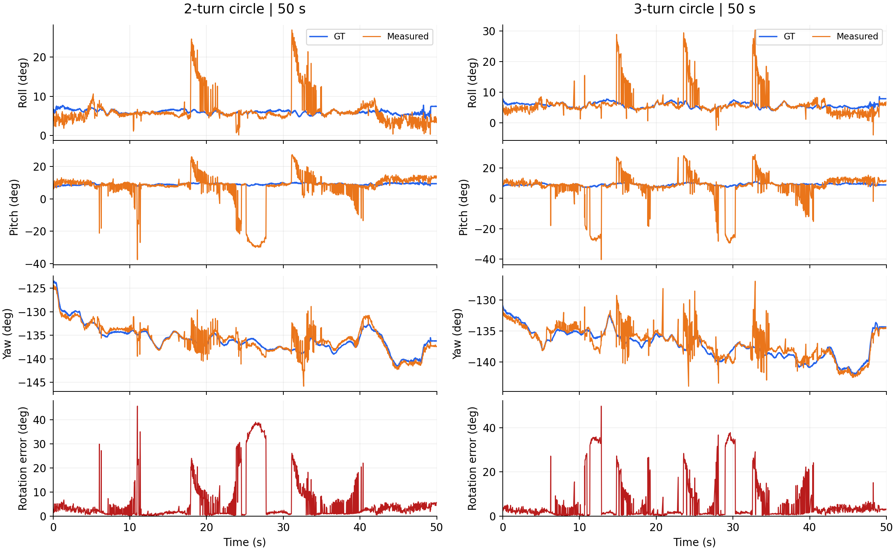

드론 경로 제어와 모션캡처 정확도 검증
여러 경로 비행과 호버 기능을 구현해 정상 동작을 확인하고, 그중 원형 비행과 호버를 대표 영상으로 남겼습니다. OptiTrack을 직접 운용해 자체 4카메라 시스템과 같은 표적을 기록하고, 위치·자세 정확도를 비교한 과정을 정리합니다.
1. 실험 장치와 카메라 배치
앞선 개발에서는 책상 주변에서 카메라 입력과 IR 마커 추적, 드론의 호버를 순서대로 연결했다. 이를 지정한 경로를 반복해서 비행하는 시스템으로 확장하려면, 카메라와 비행 공간의 관계도 일정하게 유지해야 했다. 그래서 프로그램의 경로 기능을 완성하는 작업과 함께 케이지와 카메라 장착부를 제작하고, 실험마다 같은 관측 조건을 만들 수 있도록 설치 구조를 정리했다.
케이지는 한 변이 2m인 정사각형 구조로 만들었다. 천장 중앙에 Jetson과 카메라 연결부를 두고, 그곳에서 네 방향으로 케이블을 뻗어 각 변 중앙에 설치한 카메라에 연결했다. 네 카메라는 케이지 안쪽을 향해 수평 기준 약 30° 아래로 기울여, 서로 다른 방향에서 같은 비행 공간을 보도록 배치했다.
| 연산 장치 | Jetson Orin Nano Super · 영상 처리, 위치 추정, 경로 명령과 기록 |
|---|---|
| 카메라 모듈 | Arducam B0267 CamArray · OV9281 글로벌 셔터 카메라 4대 · 카메라별 1280×800 흑백 영상 · 동기화 촬영 45FPS 설정 |
| 드론과 마커 | Crazyflie 2.1+ · IR Active Marker Deck을 장착해 외부 카메라로 위치와 자세 추적 |
| 케이지와 배치 | 2m × 2m 정사각형 · 천장 각 변 중앙에 카메라 1대씩 · 안쪽을 향해 약 30° 하향 설치 |
카메라의 방향을 조절하고 고정하기 위해 직접 제작한 케이스에 각도 조절 마운트와 클램프를 결합했다. 클램프로 케이지 프레임을 잡은 상태에서 렌즈 방향을 맞추면, 관측 범위를 조절하면서 설치 상태를 유지할 수 있다. 네 카메라의 화면을 함께 보며 이륙 위치부터 비행 높이와 착륙 지점까지 시야가 겹치도록 각도를 맞췄다.
이 배치는 삼각측량(triangulation)의 관측 조건과 연결된다. 여러 카메라에서 같은 마커를 찾으면 각 카메라의 관측 방향을 이용해 3차원 위치를 구할 수 있다. 서로 다른 방향에서 같은 점을 볼 수 있는 공통 시야를 확보하고, 구조물에 의한 가림(occlusion)을 줄이는 것이 중요하다. 케이지에는 얇은 파이프를 사용했으며, 설치를 마친 뒤에도 자체 4카메라와 OptiTrack 모두에서 바닥 마커를 가림 없이 관측할 수 있는 것을 확인했다.


카메라를 고정한 뒤 캘리브레이션과 원점 설정을 마치고, 화면에서 지정한 위치가 케이지 안의 실제 위치와 맞는지 확인했다.
2. 지정한 좌표를 비행 경로로 연결
경로 지정과 반복 실행
프로그램은 사용자가 비행 방식과 경로를 직접 정할 수 있도록 구성했다. 한 점에서 호버하기, 여러 지점을 순서대로 방문하기, 두 지점 사이를 왕복하기, 두 지점으로 원형 경로 만들기를 구현했다. 경로 설정 화면에서는 좌표와 방문 순서뿐 아니라 이동 속도, 지점별 머무는 시간과 반복 횟수도 지정할 수 있다.
지정한 경로는 저장하고 다시 불러올 수 있게 했다. 같은 경로를 매번 새로 입력하지 않고 반복 실행할 수 있으며, 계획 경로와 실제 모션캡처 궤적을 화면에 함께 표시해 움직임을 확인한다. 측정 위치는 CSV로 남겨 비행 후에도 화면에서 본 움직임을 기록과 대조할 수 있도록 했다.
경로의 좌표는 케이지를 기준으로 저장하고, 실행할 때 드론의 이륙 위치에 맞춰 전달하도록 구성했다. 지점 사이를 이동할 때는 목표 움직임을 부드럽게 연결해 방향이나 속도가 갑자기 바뀌지 않도록 했다. 좌표를 입력하는 기능부터 실제 기체에 전달할 목표 움직임을 만드는 과정까지 하나로 연결한 것이다.
목표 명령과 위치 피드백
경로 제어에서는 기체가 가야 할 곳과 현재 있는 곳을 구분해 다뤄야 한다. 목표값(setpoint)은 경로에서 정한 목표 위치이고, 외부 위치 피드백은 카메라로 측정한 현재 위치이다. 프로그램에서는 경로에 따라 목표값을 전달하는 기능과, 비행 중 측정 위치를 계속 전달하는 기능을 구분해 연결했다.
Jetson은 영상 처리와 위치 추정, 목표 경로 생성을 맡고, 기체의 비행 제어기는 센서 처리와 모터 제어를 맡는다. 사용한 Crazyflie 2.1+에서는 STM32F405가 비행 연산을, nRF51822가 무선 통신을 담당한다. 카메라로 구한 위치는 BLE로 전달했으며, 기체에는 Kalman 상태 추정기와 PID 제어기를 사용하도록 설정했다.
상태 추정기는 IMU와 외부 위치 관측을 이용해 기체의 상태를 갱신하고, 제어기는 추정한 상태와 목표 상태의 차이를 줄이는 출력을 만든다. 따라서 카메라의 위치 측정은 비행 중 현재 상태를 보완하고, 경로 설정은 그 상태가 따라가야 할 목표를 제공한다. 두 기능을 함께 동작시켜 화면에 지정한 경로가 실제 기체의 움직임으로 이어지도록 했다.
이렇게 여러 비행 방식을 구현한 뒤, 경로 지정과 저장·불러오기부터 비행 실행과 반복 수행까지 정상 동작하는 것을 확인했다. 캘리브레이션과 원점 설정을 마친 상태에서 원하는 경로를 입력하고, 계획 궤적과 실제 움직임을 함께 보며 기능을 점검했다. 이후 이 기능들 가운데 원형 비행과 호버를 대표 시연으로 선택해 촬영했다.
3. 원형 비행과 호버 복귀
상단의 두 영상은 여러 경로 기능을 구현하고 동작을 확인한 뒤 촬영한 대표 시연이다. 원형 비행은 움직이는 목표를 따라가는 동작을, 호버는 한 목표점을 유지하는 동작을 보여주기 위해 선택했다. 같은 프로그램에서 비행 방식과 목표 좌표를 바꿔 두 조건을 실행했다.
두 지점과 반복 횟수로 지정한 원형 비행
첫 번째 영상에서는 두 지점을 직접 지정해 원형 경로를 만들고, 반복 횟수에 3회를 입력했다. 드론은 설정한 경로를 세 바퀴 비행했다. 같은 기능에서 반복 횟수를 바꿔 두 바퀴 비행도 진행했으며, 두 조건의 기록을 뒤의 정확도 평가에 사용했다.
기록에는 경로 수행 전후의 상승과 착륙도 함께 남겼다. 이로써 일정 높이에서 원을 도는 움직임과 높이가 바뀌는 움직임을 같은 실험 안에서 살펴볼 수 있었다. 비행 중에는 계획 경로와 실제 궤적을 함께 확인하고, 저장한 기록으로 GT와의 위치·자세 비교를 이어갔다.
직접 지정한 지점에서의 호버와 복귀
두 번째 영상에서는 호버할 목표 지점을 직접 지정했다. 기체가 그 위치를 유지하는 동안 손으로 건드려 벗어나게 한 뒤, 다시 지정한 지점으로 돌아와 위치를 잡는 모습을 확인했다. 목표점은 그대로 두었으므로, 기체가 밀려난 뒤 보이는 움직임은 위치 오차를 줄이는 제어 응답이다.
두 시연에는 측정한 상태를 다시 제어에 반영하는 폐루프 제어(closed-loop control)가 공통으로 작동한다. 원형 비행에서는 시간에 따라 바뀌는 목표를 따라가는 경로 추종을, 호버에서는 고정된 목표에서 외란을 받은 뒤 복귀하는 응답을 살폈다. 이렇게 조건을 나누어 실행하면서 카메라의 위치 추정, 무선 전달, 기체의 제어가 실제 움직임으로 연결되는 것을 확인했다.

4. 같은 움직임을 두 시스템으로 기록
프로그램의 동작을 확인한 다음에는 카메라로 구한 위치와 자세의 정확도를 평가했다. 이를 위해 경기XR센터의 크로마키·모션캡처 스튜디오를 대여했다. 처음 계획했던 리니어 모터 스테이지 대신, 실제 드론과 자유롭게 움직이는 표적을 상용 모션캡처 시스템과 동시에 관측하는 방식으로 검증 환경을 구성했다.
센터의 OptiTrack Prime 22 12대와 Prime 13 12대, 총 24대의 카메라로 구성된 모션캡처 시스템을 정확도 평가의 기준 장비(GT)로 사용했다. 센터의 운용 PC에서 모션캡처 프로그램을 직접 조작해 움직임을 240Hz로 기록하고, 자체 제작한 OV9281 4카메라·Jetson 시스템으로 같은 표적을 동시에 추적했다.
동시 기록을 위해 먼저 양쪽 시스템에서 같은 표적이 보이는지 확인했다. 현장에서 케이지를 조립하고 네 카메라를 설치한 뒤, 센터 장비가 드론의 IR 광원을 관측하는지 살폈다. 별도의 IR 광원도 움직여 보며 모션캡처 화면에서 점이 잡히는 것을 확인했다.
관측 상태를 맞춘 뒤에는 두 시스템의 화면과 저장 상태를 나누어 확인하면서 기록했다. 이렇게 하나의 움직임에 대해 센터 장비의 GT와 자체 시스템의 측정값을 함께 확보했다. 다음 절에서는 추적한 대상과 비교 기준을 먼저 정리하고, 위치와 자세의 결과를 나누어 살펴본다.


5. GT와 비교한 위치·자세 정확도
정확도 평가는 같은 표적을 동시에 기록한 GT와 자체 모션캡처의 측정값을 비교하는 방식으로 진행했다. 원형 비행에서는 드론의 위치와 자세를, 자유 경로에서는 빠르게 움직이는 LED 한 점의 위치를 평가했다. 총 경로 길이는 m, 위치 오차는 mm, 자세 오차는 °로 구분해 정리했다.
추적 대상과 시험 방법
원형 비행에서는 드론에 장착한 LED 세 점을 두 시스템으로 동시에 추적했다. 세 점의 상대 배치로 장착판의 중심 위치와 방향을 구할 수 있으므로, LED 하나의 좌표가 아니라 같은 장착판 중심을 기준으로 위치를 비교하고 roll·pitch·yaw도 함께 평가했다. 프로그램에 지정한 원형 경로를 두 바퀴와 세 바퀴 비행시키며 상승부터 착륙까지 기록했다.
자유 경로 시험에서는 LED가 부착된 표적을 막대에 고정한 뒤, 막대를 손으로 잡고 빠르게 흔들었다. 높이와 이동 방향을 수시로 바꾸는 동안 LED 한 점을 추적해, 두 시스템이 기록한 같은 점의 위치를 비교했다. 일정한 경로를 반복하는 원형 비행과 달리 급격한 방향 전환도 포함해, 움직임이 빨라질 때 위치 오차와 추적 상태가 어떻게 달라지는지 살폈다.

비교 기준과 평가 지표
두 기록에서 동일한 대상과 시각을 대응시킨 뒤, 시험별로 하나의 강체변환을 적용해 위치와 자세를 비교했다. 강체변환은 거리의 크기를 바꾸지 않고 회전과 이동으로 좌표를 맞추는 방법이다. 비교 구간 안에서는 같은 변환을 유지했으며, 자체 시스템의 추적이 끊긴 위치는 채우지 않고 그래프에도 빈 구간으로 남겼다. 구체적인 대응 방법과 계산식은 아래에 정리했다.
평가 지표와 계산 기준
비교 대상과 정렬. 원형 비행의 위치 기준점은 LED 장착판 중심이고, 자유 경로는 추적한 LED 한 점이다. 각 시험의 동시 기록에서 시간 오프셋 하나와 강체변환(회전·이동)을 구해 비교 구간 전체에 고정 적용했다. 길이 스케일은 1로 유지했다. 표와 그래프는 이 기록 내 정렬을 적용한 결과이다. GT는 240Hz 좌표를 측정 시각에 선형 보간했으며, 자체 기록의 누락 위치는 채우지 않았다.
위치 지표. 시각 i의 GT 위치를 pi, 정렬한 측정 위치를 p̂i라 하면 3차원 오차는 ei = ‖p̂i − pi‖이고, RMSE = √(Σei²/N)이다. 평균은 Σei/N으로 계산했다. 총 경로 길이는 비교 구간의 240Hz GT 좌표에서 연속한 두 점 사이의 거리를 합산했다.
거리당 지표. GT 경로를 따라 약 0.1m 간격으로 시작점을 잡고, 1m 이상 이동한 첫 유효 표본까지를 한 부분 구간으로 삼았다. 그 구간의 측정 변위와 GT 변위 차이의 크기를 실제 GT 부분 경로 길이로 나눠 mm/m로 표시했다. 무효 기록을 포함하거나 기록 간격이 0.25초를 넘는 부분 구간은 제외했다. 부분 구간마다 추가 정렬을 하지는 않았다.
자세 지표. 코드의 LED 배치와 GT 세 점을 대응시켜 회전행렬을 복원했다. 가장 먼 두 점을 좌우 LED로 잡고 나머지를 뒤 LED로 대응시켰으며, 좌우 방향의 두 후보는 기록된 자세와 대조해 선택했다. 축별 각도는 R = Rz(yaw)Ry(pitch)Rx(roll) 규약을 사용하고, 차이를 −180°부터 180° 범위로 환산해 RMSE를 계산했다. 전체 회전각은 θi = acos((tr(RGT,iTRmeasured,i) − 1)/2)로 구해 도 단위로 나타냈다. 이 기준 자세는 GT의 개별 LED 좌표에서 복원한 값이다.
기록 주기. GT의 평균 기록 간격은 4.167ms였다. 자체 시스템의 비교 구간 내 평균 기록 간격은 2회전 원형 23.513ms, 3회전 원형 25.691ms, 자유 경로 1은 50.164ms, 자유 경로 2는 46.921ms였다. 해당 값은 CSV의 연속 타임스탬프 간격을 평균한 것이다.
위치 오차와 이동 특성
전체 비교 구간의 위치 오차를 RMSE와 평균, 95백분위수(P95), 최댓값으로 나타냈다. RMSE는 큰 오차의 영향을 함께 반영하는 대표값이며, P95는 비교 표본의 95%가 그 값 이하의 오차를 보였다는 뜻이다. 경로 길이는 각 구간에서 GT가 기록한 이동거리의 합이다.
| 시험 | 시간 (s) | 총 경로 (m) | RMSE (mm) | 평균 (mm) | P95 (mm) | 최대 (mm) |
|---|---|---|---|---|---|---|
| 2회전 원형 | 50.0 | 7.721 | 19.108 | 15.388 | 41.633 | 48.451 |
| 3회전 원형 | 50.0 | 10.024 | 18.715 | 15.234 | 39.923 | 47.747 |
| 자유 경로 1 | 62.0 | 23.954 | 23.972 | 20.290 | 41.867 | 95.852 |
| 자유 경로 2 | 70.1 | 42.279 | 33.453 | 28.047 | 59.479 | 172.383 |
원형 두 시험의 위치 RMSE는 약 19mm로 비슷했다. 자유 경로에서는 각각 약 24mm와 33mm였으며, 원형 비행보다 P95와 최대 오차도 크게 나타났다. 아래 그림에는 3차원 궤적, 축별 좌표, 위치 오차를 함께 배치해 경로의 형태와 오차가 커지는 시점을 같이 볼 수 있도록 했다.


자유 경로는 이동 속력과 추적 상태를 함께 살펴봤다. 총 GT 경로 길이를 비교 시간으로 나눈 평균 속력은 첫 번째 시험에서 약 0.39m/s, 두 번째에서 약 0.60m/s였다. 더 빠르게 움직인 두 번째 시험에서 위치 오차가 커지고 추적이 끊기는 구간도 늘었다. 손으로 표적의 높이와 방향을 빠르게 바꾸는 조건을 추가하면서, 일정한 원형 비행과 다른 움직임에서 나타나는 추적 특성을 확인했다.


이동거리당 상대 위치 오차
위치 오차와 함께 이동거리당 상대 위치 오차도 계산했다. 약 1m를 움직이는 부분 구간을 잡고, 시작점에서 끝점까지 두 시스템이 측정한 변위의 차이를 실제 GT 이동거리로 나누는 방식이다. 순간 위치가 얼마나 떨어져 있는지를 나타내는 RMSE와 달리, 이 지표는 일정 거리를 이동하는 동안 측정한 변위가 얼마나 일치하는지를 보여준다.
부분 구간별 값을 평균한 결과, 2회전 원형은 16.09mm/m, 3회전 원형은 14.84mm/m, 자유 경로 1은 24.61mm/m, 자유 경로 2는 43.52mm/m였다. 이는 전체 RMSE를 총거리로 나눈 값이 아니라, 약 1m 이동 구간마다 구한 상대 변위 오차의 평균이다. 원형 두 시험은 이 지표에서도 비슷한 수준이었고, 자유 경로 2에서 가장 큰 값이 나타났다.
회전 오차
원형 비행에서는 GT가 기록한 세 LED의 배치에 장착판 모델을 강체 정합해 기준 자세를 구하고, 자체 모션캡처가 계산한 roll·pitch·yaw와 비교했다. Roll·pitch·yaw는 각각 X·Y·Z축에 대한 회전이며, 축별 각도 차이와 두 자세 사이의 전체 회전각을 함께 평가했다. 자유 경로 시험은 단일 LED의 위치 평가로 정리했다.
| 시험 | Roll RMSE | Pitch RMSE | Yaw RMSE | 전체 회전각 RMSE | 회전각 중앙값 | 회전각 P95 |
|---|---|---|---|---|---|---|
| 2회전 원형 | 3.764 | 9.480 | 1.264 | 10.216 | 2.129 | 30.207 |
| 3회전 원형 | 4.110 | 9.818 | 1.392 | 10.627 | 1.986 | 32.858 |
전체 회전각 오차의 중앙값은 두 시험 모두 약 2°였고, RMSE는 약 10°였다. 중앙값은 전체 표본의 가운데 값을 나타내지만 RMSE에는 큰 오차가 더 강하게 반영된다. 일부 구간의 roll·pitch 차이가 두 지표 사이의 차이로 이어졌으며, 축별로는 pitch RMSE가 yaw보다 크게 나타났다.
이 결과를 바탕으로 위치 궤적의 겹침과 자세 추정을 나누어 살폈다. 같은 중심 위치를 추정하더라도 세 LED의 상대 배치에서 구하는 기울기에는 차이가 생길 수 있기 때문이다. 아래 그래프에서는 GT와 측정 각도를 나란히 놓아 roll·pitch·yaw 중 어느 축에서, 어느 시점에 차이가 커졌는지 확인했다.


6. 장치 연결에서 실험 가능한 시스템으로
이번 작업에서는 장착 구조, 위치 추정, 경로 제어를 하나의 실험 시스템으로 연결했다. 카메라 케이스와 클램프는 필요한 공간을 일정하게 관측하기 위한 구조였고, 캘리브레이션과 원점 설정은 그 관측을 실제 비행 좌표로 연결하는 준비였다. 장비를 실험실 밖으로 옮겨 다시 설치하면서, 프로그램의 기능을 반복해서 사용하려면 이런 물리적인 조건도 함께 유지해야 한다는 점을 배웠다.
제어 프로그램을 구현하는 과정에서는 목표 명령과 위치 피드백의 역할을 구분해 이해했다. 같은 위치 측정 기능을 사용하더라도 목표를 고정하면 호버가 되고, 목표를 경로에 따라 바꾸면 경로 추종이 된다. 여러 비행 방식과 경로 저장·반복 실행을 구현하고 동작을 확인한 뒤, 원형 비행과 호버를 대표 영상으로 남겨 그 연결을 보여주었다.
센터의 모션캡처 장비를 직접 운용하고 자체 시스템과 동시에 기록하면서 위치뿐 아니라 자세도 수치로 평가했다. 평균적인 오차와 오차가 커지는 구간을 구분하고, 빠르게 흔드는 자유 경로에서는 이동 속력과 추적 상태를 함께 살폈다. 직접 설계한 장치와 프로그램이 실제로 움직이는 과정을 확인한 데 이어, 그 움직임을 어떤 기준과 지표로 평가할지까지 다뤄본 과정이었다.
케이지 제작과 설치, 비행 제어 시스템 구현, 현장 검증과 정확도 평가까지 마쳤고, 다음 글에서 졸업논문 작업을 마무리할 예정이다. 논문과 최종 데모 발표 영상을 함께 정리하고, 프로그램을 오픈소스로 공개하면서 저장소 링크도 그 글에 모아둘 계획이다.